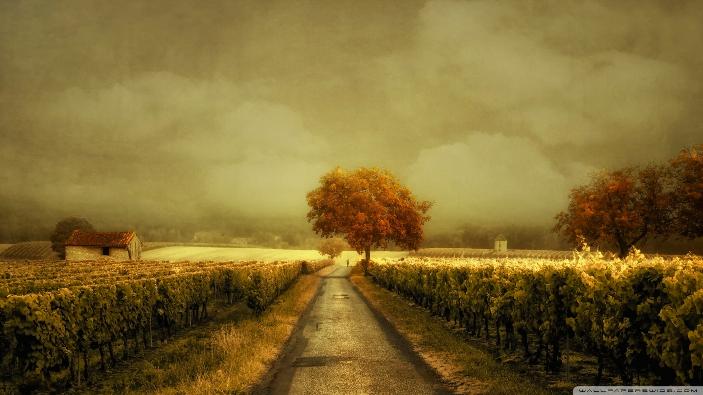
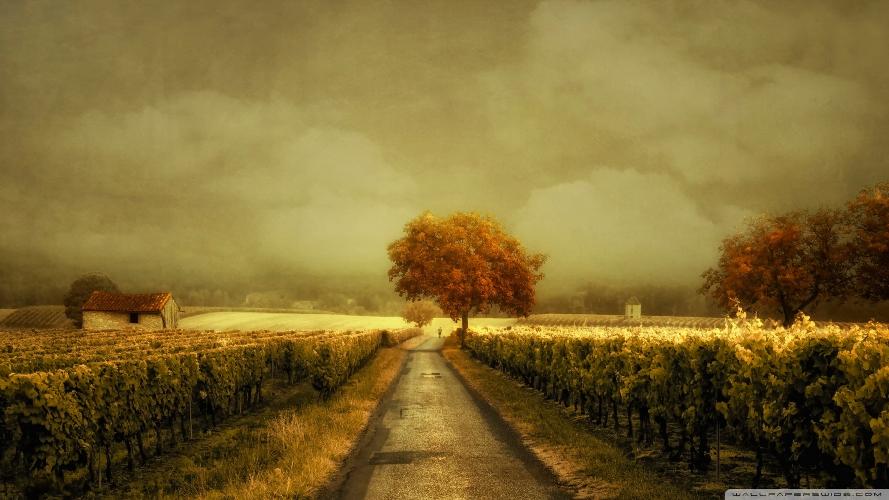
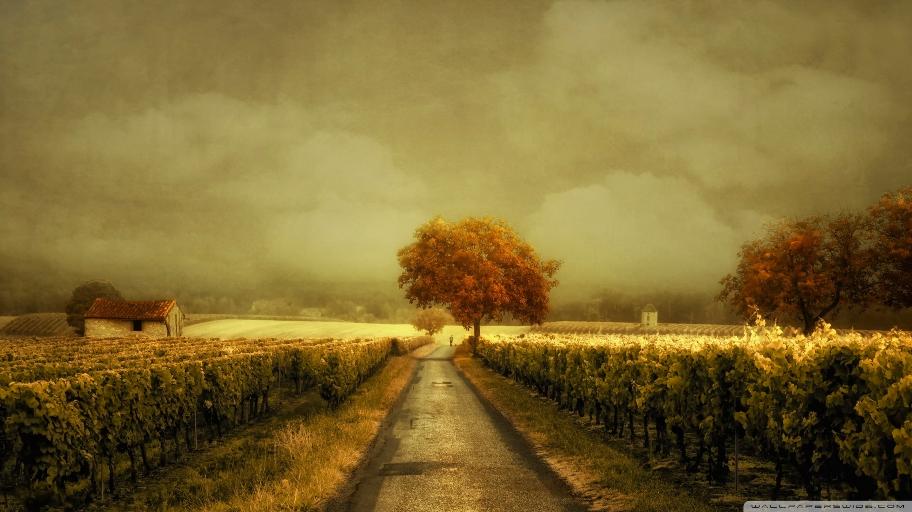
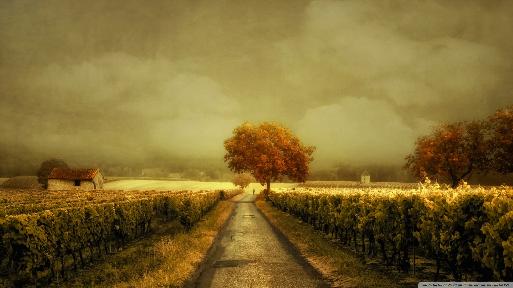

Assaporare


 



Noi siamo la famiglia Bastianello, nata nel 1970 a Gambellara che continua tutt' ora con la 3 generazione. Tra divertimento e l' impegno, si è espansa fino ad adesso comprendendo circa 50 ettari di vigneto e oltre 1000 piante di ulivo. Questi 50 ettari sono compresi nelle varie cantine di proprietà familiare come:
Nani, Feudo Acreide, Federico II.
I nostri vini e la nostra passione la portiamo non soltanto in Italia, ma anche all’estero, esportando in: Germania, Africa (Costa d’Avorio), Cina (shanghai 上海), Inghilterra, Belgio.